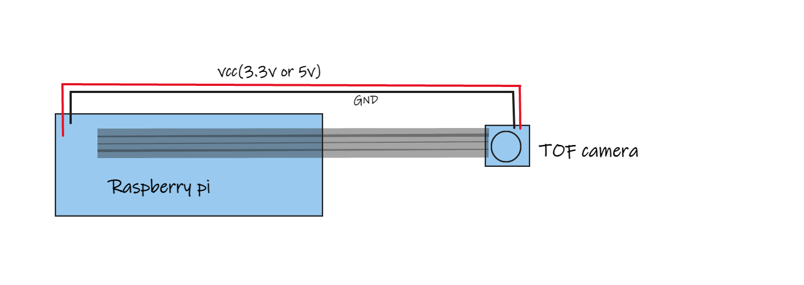

Quick Start
First connect the hardware as shown:
- Then you need to install the pivariety driver:
wget -O install_pivariety_pkgs.sh https://github.com/ArduCAM/Arducam-Pivariety-V4L2-Driver/releases/download/install_script/install_pivariety_pkgs.sh chmod +x install_pivariety_pkgs.sh ./install_pivariety_pkgs.sh -p kernel_driver
- And you need to alter the camera configuration in your /boot/config.txt file. to add dtoverlay.
camera_auto_detect=0 dtoverlay=arducam,media-controller=0
Finally download the example, install the development dependencies according to the readme, compile, and run the example.